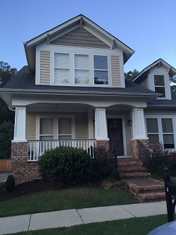
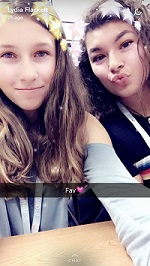
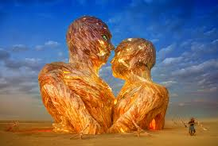
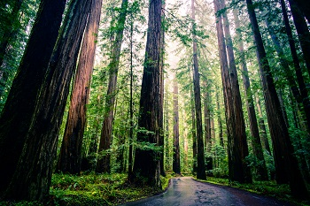

I was born March 23rd, 2001 in Elkton Maryland! At the time, I was the youngest in my family, after my three older sisters and one older brother. But two years ago, my baby brothert Rory was born. Even though I lived in Maryland, I went to school in Delaware for my first year of high school, until I moved to South Carolina in August. For elementary and middle school, I went to Mount Aviat Academy, and for my freshman year of high school, I went to St Mark's High School. At St Marks, I was on student council and played field hockey, lacrosse, and swimming.
Currently, I am a sophomore at JL Mann I live in Greenville, South Carolina. I have also made new friends, but I am still close with my friends back in Delaware. My brother is a junior at JL Mann and all three of my sisters are in college, or have graduated. Also, I live with my mom, dad, older brother (Blayne), my younger brother (Rory), my grandmother and my dog Suade.
My oldest sister Blake is in Chigaco and has her masters and wants to become a psychologist. My other older sister Brook is in New York and my other sister Chandler is in Florida. As of right now, some of my interests include watching Netflix, online shopping and listening to music. Here is a link to a online store I like to shop at.... Here is the website!
 For my future, I want to either go to Duke or Berkely for college. After college, I want to go to medical school so I can become a plastic surgeon. Afer I finish my residency, I want to live somewhere in California, or move back up North. However, I do not want to live that far away from the rest of my family. I also want to have kids but not until I am older and already have established a career and have, hopefully, started my own medical practice.
 